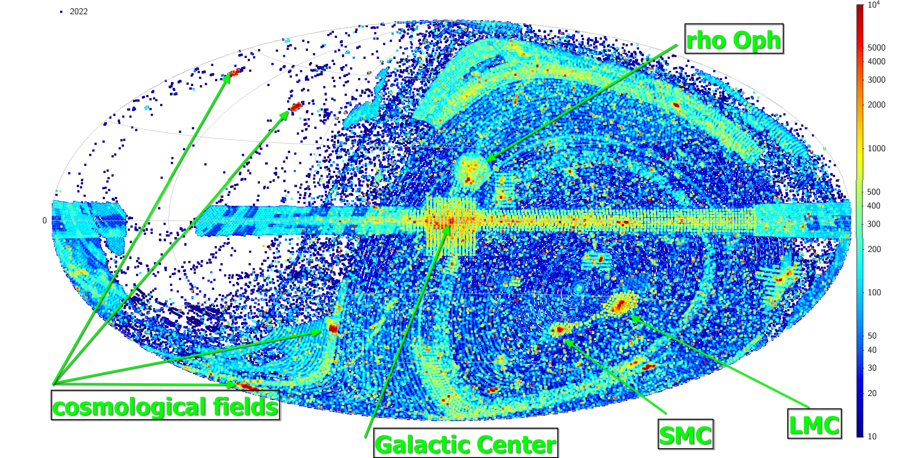

publication date 2022/07/31
In this video I portrayed the temporal evolution of the content of the files stored at the European Southern Observatory (ESO) Science Archive Facility (SAF) from the begin of the creation of the ESO archive (1998) till now.
In the above map each point represent a single FITS file in the ESO archive like images, spectra, data cubes, interferometry, radio data. The map is shown in galactic Aitoff projection. The calibration files, like bias, dark, flat fields, etc. are not displayed in the map. For visualization purposes the size of each point is fixed and doesn't represent the real extent in the sky of the data. The color scale on the left side show the density of files in the sky.
The galactic center is at the center of the map and the galactic equator is horizontal at the middle of the image. On the left side of the image the galactic longitude increase from the galactic center at 0 to 180 on the left border, while on the right side it decrease from the galactic center at 360 to 180 at the right border.
The ESO archive contains data collected with ESO telescopes and also from UKIRT telescope in the northern emisphere. The almost empty region on the left of the image is the region of the sky at declinations greater than 45 degrees, where ESO telescopes cannot observe, the points in this region comes from UKIRT
Due to their intrinsic interest, some regions of the sky are observed more often than others, like the the Galactic Center region, the Large Magellanic Cloud, the Small Magellanic Cloud, the star forming region of ρ Ophiuchi. The region along the galactic plane, is filled with data from the VISTA/VVV survey (southern emisphere) and from data from UKIRT/WFCAM (northern emisphere). The overdensities at high galactic latitudes are generated by the surveys (imaging) conducted with VISTA and VST telescopes.
Below there is an annotated version of the content of the archive in July 2022. 
This research has made use of the services of the ESO Science Archive Facility.
This work make use of TOPCAT
Go to the astronomy index
Next article